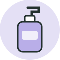
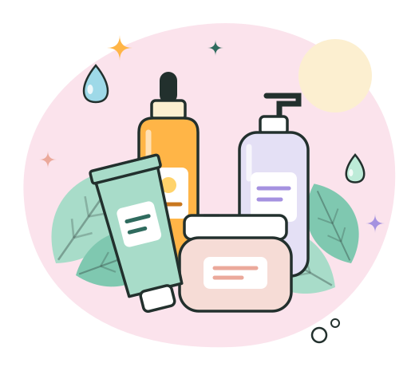
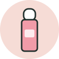
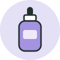

Agua micelar sin fragancia
Todo tipo de piel
Micelas
Atrapan el maquillaje y el protector solar sin necesidad de frotar. Úsala como primer paso de la noche.
Elige la opción que más se parezca a tu piel y te mostraremos una rutina básica con productos adecuados para ti.

¿No estás seguro? Lava tu cara con agua, sécala y espera una hora sin aplicar nada. Si brilla toda, es grasa; si solo brilla la zona central, es mixta; si se siente tirante, es seca.
Con estos tres pasos cubres lo esencial. Añade a tu rutina los productos que te interesen y consúltala cuando quieras en Mi rutina.
Retira grasa, sudor y suciedad sin resecar.

Todo tipo de piel
Atrapan el maquillaje y el protector solar sin necesidad de frotar. Úsala como primer paso de la noche.
Piel grasa y mixta
Entra en el poro y ayuda a retirar el exceso de sebo. Si notas resequedad, úsalo solo por la noche.
Piel seca y sensible
Atrae agua hacia la piel y limpia sin arrastrar sus aceites naturales.
Repone el agua y fortalece la barrera de la piel.
Piel grasa y mixta
Retiene agua en la superficie de la piel y la hidrata sin sensación grasosa.
Piel seca y mixta
Son lípidos de la barrera cutánea; ayudan a reducir la pérdida de agua durante la noche.
Piel seca y sensible
Alivia la comezón y la irritación. Es apta incluso para piel con tendencia atópica.
Previene manchas y envejecimiento por el sol.
Piel grasa y mixta
Protegen de los rayos UVA y UVB con acabado mate. Reaplícalo cada 2 o 3 horas si estás al sol.
Piel seca y sensible
Filtro mineral que refleja la radiación; suele irritar menos a las pieles sensibles.

Todo tipo de piel
Hidrata y protege los labios, una zona que solemos olvidar al aplicar protector.
Introduce un solo producto nuevo a la vez y espera unas dos semanas antes de añadir otro. Así sabrás qué le funciona a tu piel y qué no. La constancia importa más que la cantidad de productos.
Un tratamiento se aplica después de limpiar y antes de hidratar. Empieza con uno solo para saber cómo reacciona tu piel.
Para el rostro que brilla a media mañana y los poros visibles.
Piel grasa y mixta
Ayuda a regular el sebo y mejora la apariencia de los poros. Se tolera bien en casi todas las pieles.
Para unificar el tono y las marcas que dejan los granitos o el sol.
Piel seca, grasa y mixta
Antioxidante que unifica el tono. Úsala por la mañana, siempre debajo del protector solar.
Para la piel áspera, con relieve o marcas finas.

Piel seca, grasa y mixta
Acelera la renovación de la piel. Empieza con dos noches por semana y usa protector solar a diario.
Para el enrojecimiento, el ardor o la piel irritada.
Todo tipo de piel
Reduce el enrojecimiento y ayuda a la piel irritada a recuperarse.